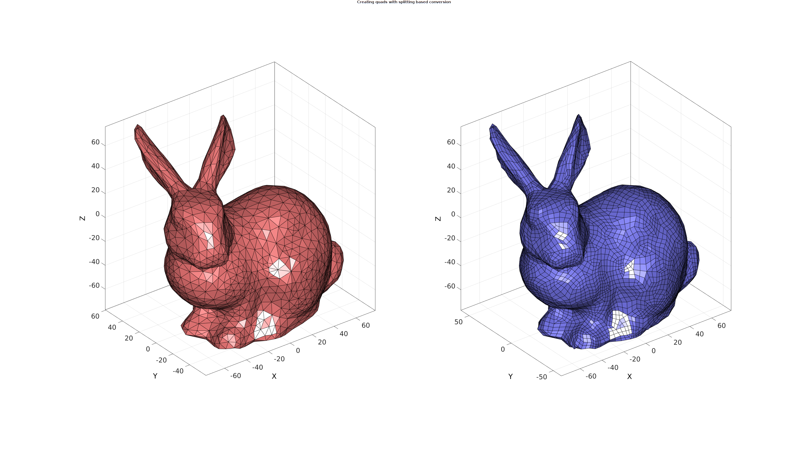
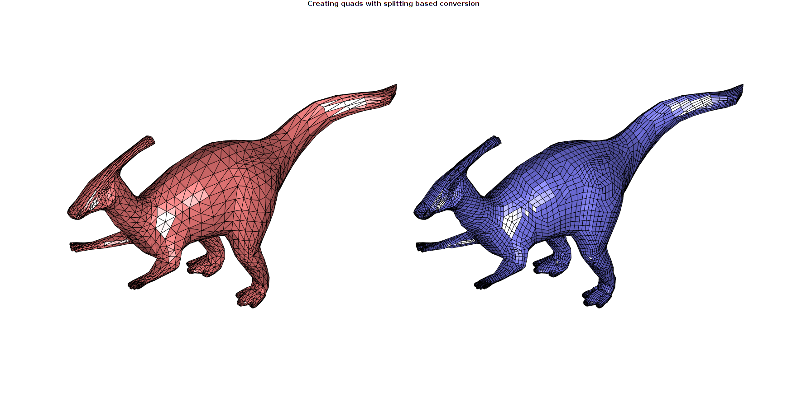

tri2quadGroupSplit
Below is a demonstration of the features of the tri2quadGroupSplit function
Contents
clear; close all; clc;
Syntax
[F_quad,V_quad,F_tri_remain,V_tri_remain]=tri2quadGroupSplit(F_tri,V_tri,optionStruct);
Description
The tri2quadGroupSplit function converts the triangulated input data F_tri (faces) and V_tri (vertices) to quadrilateral elements F_quad (faces) and V_quad (vertices). Quadrilateral elements are formed by grouping adjacent triangles. Once a maximum number of quadrilateral elements are formes some triagles may remain. If desired these can also be converted to quadrilateral elements through splitting. If splitting is used the grouped quadrilaterals also require splitting to create a mesh with shared nodal connectivity. Splitting based conversion can be turned off. The remaining triangle set can also be obtained if desired through the optional outputs F_tri_remain (faces) and V_tri_remain (vertices). The third input is the option structure optionStruct with the fields:
optionStruct.maxAngleDeviation=60*(pi/180); %The maximum angle used for optionStruct.selectionMethod='best'; % or 'random' optionStruct.triangleConvert=0; %Convert the remaining triangles (1) or not (0)
Examples
Create test data set
testCase=3; switch testCase case 1 [F_tri,V_tri]=geoSphere(2,1); case 2 [F_tri,V_tri]=stanford_bunny; case 3 [F_tri,V_tri]=parasaurolophus; end
Convert adjacent triangles by picking the best candidates, keeping unconverted triangles
optionStruct.maxAngleDeviation=60*(pi/180);
optionStruct.selectionMethod='best';
optionStruct.triangleConvert=0;
[F_quad,V_quad,F_tri_remain,V_tri_remain]=tri2quadGroupSplit(F_tri,V_tri,optionStruct);
Visualize result
cFigure; gtitle('Creating quads without splitting based conversion'); subplot(1,2,1); hold on; gpatch(F_tri,V_tri,'rw','k',1); axisGeom; axis off; camlight headlight; zoom(1.5); subplot(1,2,2); hold on; gpatch(F_quad,V_quad,'bw','k'); gpatch(F_tri_remain,V_tri_remain,'r','k',1); axisGeom; axis off; camlight headlight; zoom(1.5); drawnow;

Convert adjacent triangles by picking best candidates, converting remaining triangles by splitting
optionStruct.maxAngleDeviation=60*(pi/180);
optionStruct.selectionMethod='best';
optionStruct.triangleConvert=1;
[F_quad,V_quad]=tri2quadGroupSplit(F_tri,V_tri,optionStruct);
Visualize results
cFigure; gtitle('Creating quads with splitting based conversion'); subplot(1,2,1); hold on; gpatch(F_tri,V_tri,'rw','k',1); axisGeom; axis off; camlight headlight; zoom(1.5); subplot(1,2,2); hold on; gpatch(F_quad,V_quad,'bw','k'); axisGeom; axis off; camlight headlight; zoom(1.5); drawnow;

Convert adjacent triangles by picking random candidates
Random picking may be useful if the smallest amount of remaining triangles is of interest. E.g. one could randomly pick the next quad such that different results are obtained each time. This way one could keep the results yielding the smallest number of remaining triangles.
numAttempts=10; F_cell=cell(1,10); F_tri_cell=cell(1,10); V_cell=cell(1,10); for q=1:1:numAttempts optionStruct.maxAngleDeviation=45*(pi/180); optionStruct.selectionMethod='random'; optionStruct.triangleConvert=1; [F_quad,V_quad,F_tri_remaining]=tri2quadGroupSplit(F_tri,V_tri,optionStruct); F_cell{q}=F_quad; F_tri_cell{q}=F_tri_remaining; V_cell{q}=V_quad; end numTrianglesRemaining=cellfun(@(x) size(x,1),F_tri_cell); [~,indMin]=min(numTrianglesRemaining); F_quad=F_cell{indMin}; V_quad=V_cell{indMin};
Visualize results
cFigure; gtitle('Creating quads with splitting based conversion'); subplot(1,2,1); hold on; gpatch(F_tri,V_tri,'rw','k',1); axisGeom; axis off; camlight headlight; zoom(1.5); subplot(1,2,2); hold on; gpatch(F_quad,V_quad,'bw','k'); axisGeom; axis off; camlight headlight; zoom(1.5); drawnow; 